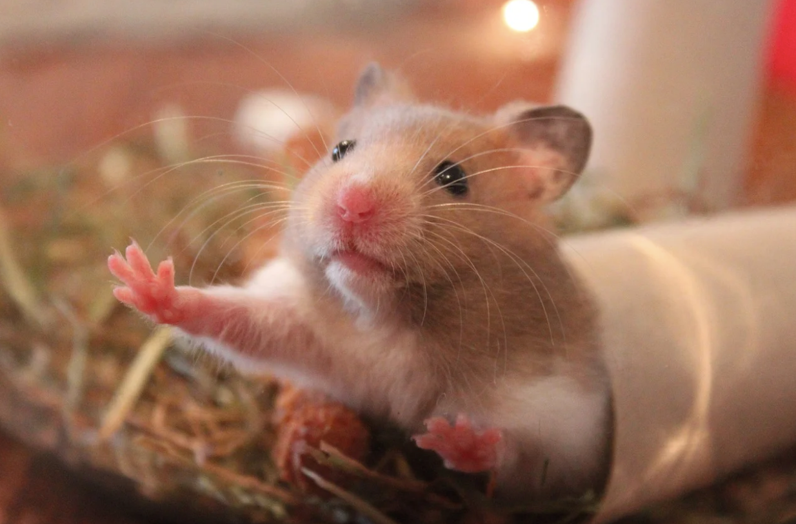

Care
How to Care for your Hamster

Hamster Diet
All hamsters are omnivorous, not herbivores (like rabbits or guinea pigs). That means that a hamster does not need to have hay in their diet, nor should they be fed hay based pellets like those used for rabbits or guinea pigs. Instead they need a protein rich seed based diet. It is recommended to use a high variety seed mix, such as the higgins sunburst seed mix, as a base for your hamsters diet. Then, you mix in a protein block, such as the Matsuri mouse and rat lab block, at a 50% ratio. This will provide your hamster with the nutrients it needs to survive, while also keeping the diet interesting for the hamster. Hamsters should also be fed fruits and vegetables, such as carrots, corn, celery, and strawberries, and be given fresh water daily.
General Hamster Care
In addition to their diet, hamsters also need enrichment to truly thrive in their environments. Hamsters are incredibely active creatures and need to be provided a suitablely sized hamster wheel so they can run during the night. This should be a wheel that is at least 8 inches, so a fully grown hamster can run on it with their back flat. If their back curves when they run, it could lead to spine issues. In addition to a hamster wheel, a hamster also needs to have hides. A hide is literally a place for your hamster to hide and rest in their cage. They can be wooden, ceramic, or even cardboard! Hamsters also enjoy having an area of their cage that is made up of sand, especially roborovski hamsters. Hamsters should not be bathed in water - instead they can clean themselves inside of areas of sand. This helps them manage the oils on their fur and keep their coats shiny. Hamsters can also be potty trained inside of their sand areas, just like a cat, which makes clean up easier for you, their owner. Lastly, hamsters should NEVER be housed together. They are not a social species, and will kill each other if they are housed together.
Common Hamster Illnesses
In general, hamsters are very healthy animals. However, they still can get sick and some illnesses are rather common. Dwarf hamsters in particular are at a higher risk of getting diabetes, so if you have a dwarf hamster you need to be careful to manage it's diet! Young Syrian hamsters can also get a deadly illness called "wet tail." This is an illness that only affects Syrian hamsters that are under 8 weeks of age, so once the Syrian hamster reaches hamster adulthood, they are no longer at risk of getting wet tail. Wet tail is an illness that requires vet care, otherwise the hamster will die. Hamsters can also get colds, and hamsters actually can also get COVID-19. If you are sick, be careful not to handle your hamster too much or you risk getting your furry friend sick as well! Like all species of rodents, hamsters have teeth that grow constantly. A hamster needs to have chew toys in their cage, or else the hamsters teeth may become overgrown. If a hamster's teeth becomes extremely overgrown, it can even start cutting the hamsters face. If that occurs, the hamster will need to go to the vet for a tooth trimming. The best care is preventative care, so make sure you hamster has a variety of chew toys in its cage. These toys can be made out of wood, cardboard, or even food!